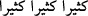

68. Rabbimiz! Onlara iki kat azap ver ve onları büyük bir lânetle rahmetinden
kov.
“Rabbimiz!” Duâya böyle mükerrer nidâ ile başlamak, yakarış ve duâya icâbet edilip
kabûlünü taleb etmekte mübâlağa içindir.
“Onlara iki kat azap ver” yâni bize verdiğin azâbın iki mislini ver. Çünkü onlar hem
sapmışlar, hem de saptırmışlardır. Şu halde azâbın bir katı kendilerinin hidâyet
yolundan saptıkları için, bir katı da başkalarını hidâyet yolundan sapıttıkları içindir “ve
onları” şiddetli ve çok “büyük bir lânetle rahmetinden kov.”
“__WORD__ ve “__WORD__ kelimeleri asıl olarak aynî şeylerde kullanılır. Sonra mecâzen
mânâlar hakkında da kullanılmışlardır.
Onları öyle bir kov ki, bir daha geri çağırma olmasın. Şu kesindir ki Hak Teâlâ kimi
kovup sürmüşse artık kimse onu çağıramaz.
Kahrınla kovduğun/sürdüğün kimseyi kim çağırabilir?
Lütfunun çağırdığını da kimse kovamaz/süremez.
“__WORD__ (büyük)” kelimesi “__WORD__ (çok)” diye de okunmuştur. Yâni onları çok sayıda,
lânetin peşinden başka bir lânetle, tekrar tekrar lânetle rahmetinden kov, demektir. Bu
lânetin çokluğuna şu âyet şâhid/delildir: “Allâh’ın, meleklerin ve tüm insanların
lâneti onların üzerinedir.” (el-Bakara, 2/161)
Keşfü’l-esrâr’da der ki: “Muhammed b. Ebi’s-Seriy, zamanın kâmil erlerinden
birisiydi. Şöyle dedi: “Bana rüyamda Askalân mescidinde Kur’ân okuyan birini
gösterdiler. Âyetin “__WORD__ kısmına gelince ben “__WORD__ dedim. O ise “__WORD__ dedi.
Tekrar baktım, mescidde Allah Rasûlü’nü gördüm, minareye yönelmişti. Yanına gittim
ve “es-Selâmü aleyke yâ Rasûlullâh! Benim için istiğfâr et.” dedim. Benden yüzünü
çevirdi. Tekrar sağından karşısına geçtim ve “Yâ Rasûlullâh! Benim için istiğfâr et.”
dedim. Allah Rasûlü yüzünü çevirdi. Bu sefer karşısına dikildim ve “Ey Allâh’ın
Rasûlü! Süfyân b. Uyeyne, Muhammed b. Munkedir’den, o da Câbir b. Abdullah’tan
naklen bana haber verdi ki, senden bir şey istenildiğinde “Hayır” dediğin vâki olmamış.
O halde nasıl oluyor da benim isteğimi reddediyorsun ve murâdımı geri çeviriyorsun?”
dedim. Allah Rasûlü tebessüm etti ve ardından “Ey Allâh’ım! Onu affet.” dedi. Ben:
“Ey Allâh’ın Rasûlü, benimle bu adam arasında ihtilâf var. O, “__WORD__ diyor;
ben “__WORD__ diyorum.” dedim. Allah Rasûlü, hem minâreye doğru gidiyor, hem de “__WORD__ diyordu.
Sonra Allah Teâlâ bu âyetlerle kâfirleri azaplandıracağını bildiği cezânın zorluğunu/
çetinliğini; kendilerine pişmanlığın fayda vermediği, bu pişmanlığın ancak cezâ ve
azarlama/kınamaya dönüştüğü zamanda yaptıkları aşırılıklara karşılık duydukları
nedâmeti haber vermiştir.